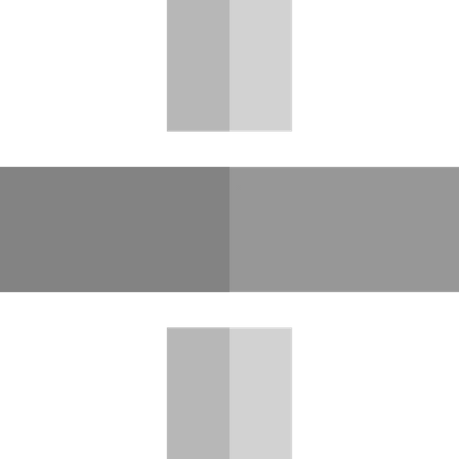

Computação na Nuvem (EC2, Lightsail e mais)
A computação em nuvem oferece a flexibilidade e o poder necessários para rodar aplicações de qualquer porte, desde pequenos sites até sistemas empresariais complexos. A Amazon Web Services (AWS) disponibiliza diversos serviços que permitem criar, gerenciar e escalar servidores de forma simples e segura.
 Amazon EC2 (Elastic Compute Cloud):
ideal para quem precisa de maior controle. Você pode configurar
máquinas virtuais sob medida, com escolha de sistema operacional,
processador, memória e armazenamento. É a solução perfeita para aplicações
que exigem alto desempenho e personalização.Clique na img para ver o icon em tela cheia
Amazon EC2 (Elastic Compute Cloud):
ideal para quem precisa de maior controle. Você pode configurar
máquinas virtuais sob medida, com escolha de sistema operacional,
processador, memória e armazenamento. É a solução perfeita para aplicações
que exigem alto desempenho e personalização.Clique na img para ver o icon em tela cheia
Amazon Lightsail: pensado para quem busca praticidade. Ele oferece instâncias pré-configuradas com preços previsíveis, facilitando a hospedagem de sites, blogs, aplicações web e bancos de dados sem complicação.Clique na img para ver a icon em tela cheia
AWS Lambda: Modelo de computação serverless. Você executa código sem se preocupar em configurar ou administrar servidores, suporta várias linguagens (Python, Node.js, Java, Go, C# e mais). Ótimo para processar eventos em tempo real, como uploads em S3, mensagens em filas ou chamadas de API, cobrança apenas pelo tempo de execução do código (em milissegundos).Clique na img para ver a icon em tela cheia
 AWS Elastic Beanstalk: Serviço PaaS (Platform as a Service) que facilita a implantação de aplicações web, suporta linguagens como PHP, Python, Node.js, Ruby, Java, .NET e Go. Automatiza tarefas como provisionamento de instâncias EC2, balanceamento de carga, escalabilidade e monitoramento. Perfeito para desenvolvedores que querem focar no código sem lidar com a infraestrutura.Clique na img para ver a icon em tela cheia
Esses são alguns dos principais serviços de computação em nuvem da AWS, projetados para atender desde aplicações simples até sistemas corporativos de grande porte, oferecendo flexibilidade, escalabilidade e alto desempenho.